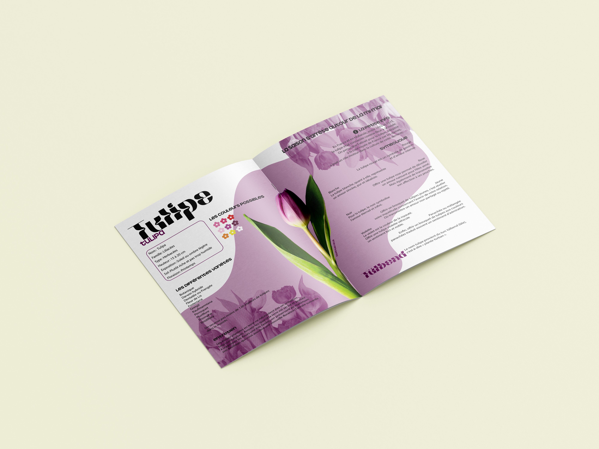
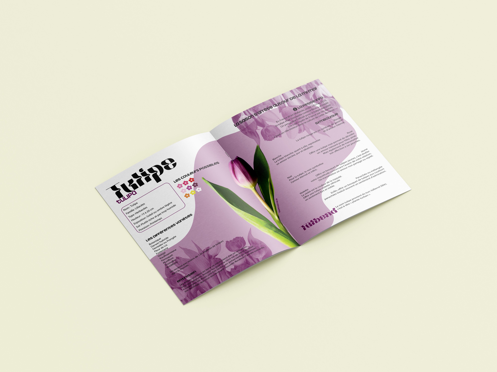

Magazine Flos
Flos est un magazine dédié aux fleurs de saison, célébrant la diversité et la beauté de chaque fleur à travers les quatre saisons.
Publié trimestriellement, Flos accompagne ses lecteurs au fil de l’année, dévoilant les merveilles florales propres à chaque période.
Chaque numéro explore les raisons et les bienfaits de consommer des fleurs de saison, favorisant une approche respectueuse de la nature, ainsi que des choix durables et éthiques réduisant ainsi la pollution.
À travers une approche esthétique et pédagogique, Flos se veut un guide inspirant pour tous ceux qui souhaitent célébrer la nature au rythme des saisons, en découvrant et adoptant les fleurs du moment.
Mai 2024
Typographie

 
